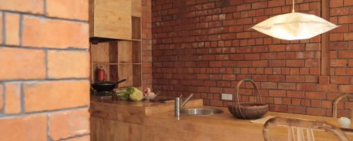

-
【装修知识】家装细节之开关插座的选择01
发布日期： 2016-08-26 分类： 装修知识开关插座的关键不用多说，大家都懂得，如何判断开关插座的品质呢？有几点倒是可以借鉴。1、将开关或插座的外框取下来，用手捏一下，如果不会断裂说明是比较好的PC料...
阅读正文 -
【装修知识】家装细节之开关插座的选择02
发布日期： 2016-08-26 分类： 装修知识开关插座的关键不用多说，大家都懂得，如何判断开关插座的品质呢？有几点倒是可以借鉴。1、将开关或插座的外框取下来，用手捏一下，如果不会断裂说明是比较好的PC料...
阅读正文 -
【装修知识】家装细节之开关插座的选择03
发布日期： 2016-08-26 分类： 装修知识开关插座的关键不用多说，大家都懂得，如何判断开关插座的品质呢？有几点倒是可以借鉴。1、将开关或插座的外框取下来，用手捏一下，如果不会断裂说明是比较好的PC料...
阅读正文 -
【装修知识】家装细节之开关插座的选择04
发布日期： 2016-08-26 分类： 装修知识开关插座的关键不用多说，大家都懂得，如何判断开关插座的品质呢？有几点倒是可以借鉴。1、将开关或插座的外框取下来，用手捏一下，如果不会断裂说明是比较好的PC料...
阅读正文
最新资讯
更多>>